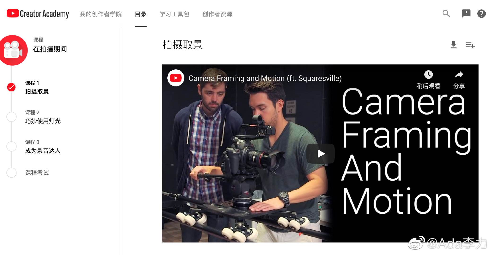

@Ada李力:
#一个人的企业#
我刚进入IT行业的时候，也走过一段时间弯路，比如从所谓的大神那里学习入门知识，后来才发现，往往官方提供更全面也更权威，而且还是免费的各种培训资料，而无论什么样的大神，对知识或多或少都存在一些误解，以及在培训中掺水太多，废话太多，看起来效率极低。我从来没见过任何一个IT大神，培训内容能强过官方文档。
但是后来发现很多人，还是更喜欢看各种各样大神的讲解，在我看来，类似放着好好的饭菜不自己吃，要吃别人嚼过的东西。我想过为什么会出现这种现象，大概是有些人在学生期间养成的习惯，觉得课本很枯燥，觉得要取得高分，还是要依赖课外辅导书，造成了教学辅导书比课本还重要的现象。实际上，学得好的学生，最主要的时间是花在学透课本知识上。
在学做视频的过程中，看到网上不少人提供的培训视频，马上想到的是IT行业中的各种大神。但有没有官方出的免费培训资料呢，我还真找到了，Youtube Creator Academy, 基本上囊括了需要了解的视频基本知识。
进入新领域，如果想少走弯路，跟谁学很重要。
我刚进入IT行业的时候，也走过一段时间弯路，比如从所谓的大神那里学习入门知识，后来才发现，往往官方提供更全面也更权威，而且还是免费的各种培训资料，而无论什么样的大神，对知识或多或少都存在一些误解，以及在培训中掺水太多，废话太多，看起来效率极低。我从来没见过任何一个IT大神，培训内容能强过官方文档。
但是后来发现很多人，还是更喜欢看各种各样大神的讲解，在我看来，类似放着好好的饭菜不自己吃，要吃别人嚼过的东西。我想过为什么会出现这种现象，大概是有些人在学生期间养成的习惯，觉得课本很枯燥，觉得要取得高分，还是要依赖课外辅导书，造成了教学辅导书比课本还重要的现象。实际上，学得好的学生，最主要的时间是花在学透课本知识上。
在学做视频的过程中，看到网上不少人提供的培训视频，马上想到的是IT行业中的各种大神。但有没有官方出的免费培训资料呢，我还真找到了，Youtube Creator Academy, 基本上囊括了需要了解的视频基本知识。
进入新领域，如果想少走弯路，跟谁学很重要。
- 